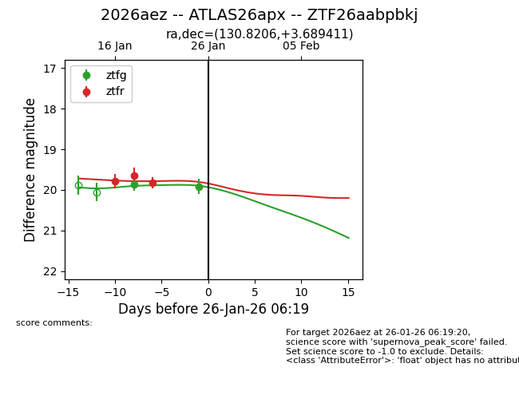
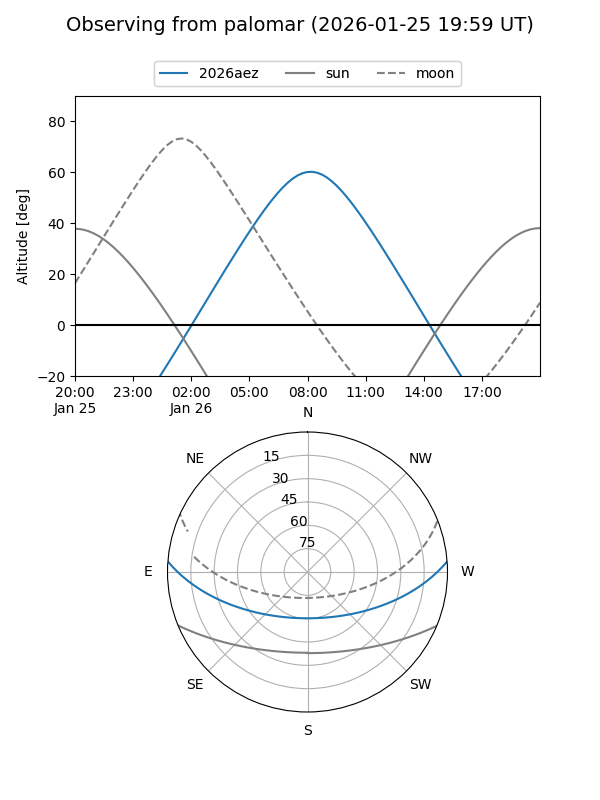
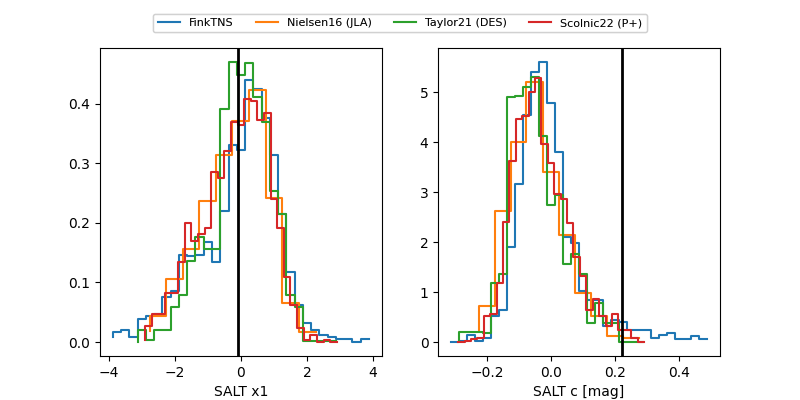

2026aez
Target 2026aez at 2026-01-21 00:51
Aliases and brokers:
FINK: link
Lasair: link
ALeRCE: link
TNS: link
YSE: link
alt names
ZTF26aabpbkj (ztf,fink_ztf)
2026aez (tns,yse)
ATLAS26apx (atlas)
Coordinates:
equatorial (ra, dec) = 130.8206,+3.68941
equatorial (HMS+DMS) = 08:43:16.95,+03:41:21.88
galactic (l, b) = (222.9739,+26.47248)
Flags:
Photometry:
last ztfg=19.86, ztfr=19.65
1 ztfg, 2 ztfr detections
Lightcurve

Visibility


Additional plots
